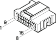

M35 Alarm remote control receiver ( REAR )
- Path
- Electrical equipment > Connectors > M Intermittent and timed electronic devices,.. > M35 Alarm remote control receiver > M35 Alarm remote control receiver ( REAR )
- Kind
- connector pinout (pin -> wire colour -> other end)
- Applies to
- engines: 1.6 TS , 1.8 TS, 2.0 JTS, 2.5 V6, 3.2 V6, 1.9 JTD 8v , 1.9 JTD 16v, 2.0 JTS, 2.4 JTD 10v, 2.4 JTD 20v; production: fino a 03/98, da 04/98 a 02/99, da 03/99 a 01/00
- Interactive page
- https://sloeber94.github.io/elrnDB-a156/en/#/3236880
Applies to: engines: 1.6 TS , 1.8 TS, 2.0 JTS, 2.5 V6, 3.2 V6, 1.9 JTD 8v , 1.9 JTD 16v, 2.0 JTS, 2.4 JTD 10v, 2.4 JTD 20v; production: fino a 03/98, da 04/98 a 02/99, da 03/99 a 01/00

Wiring | Colour |
|---|---|
NERO (black) |
Topics linked from this page (10)
- 25 REAR
- B1E Junction unit ( FACIA )
- B1G Junction unit ( FACIA )
- C20B Passenger side dashboard earth ( REAR )
- D20 /Rear dashboard coupling
- D6A Front / rear connection ( FRONT )
- D75 Radio phone junction
- D76 TELEPASS" connection"
- G32 Passenger sun blind light
- M40B Integrated services control unit ( REAR )